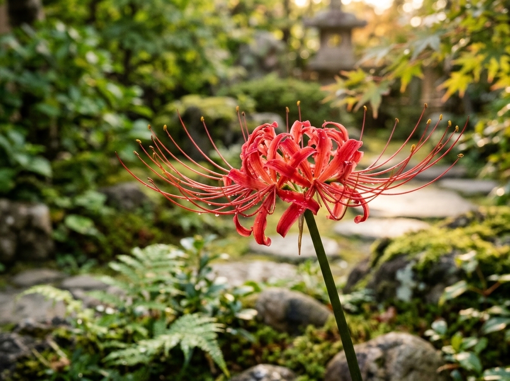

Higanbana

A higanbana, também conhecida como lírio-aranha-vermelho, é uma flor originária da Ásia, muito associada à cultura japonesa. Suas pétalas longas e curvas formam uma aparência delicada e marcante. A flor aparece frequentemente em paisagens e representações artísticas do Japão, chamando a atenção por sua cor vermelha intensa.
História da Higanbana
A higanbana, conhecida popularmente como lírio-aranha-vermelho, é uma planta bulbosa originária da Ásia, bastante conhecida no Japão. Seu nome científico é Lycoris radiata, e sua aparência chama a atenção pelas pétalas estreitas, longas e curvadas, que lembram as pernas de uma aranha. Suas flores apresentam uma coloração vermelha intensa, tornando a planta facilmente reconhecível em jardins e paisagens naturais.
No Japão, a higanbana está tradicionalmente associada ao outono, época em que costuma florescer. É comum encontrá-la em áreas rurais, caminhos e margens de campos. Seu nome japonês está relacionado ao Higan, período de observância budista que acontece próximo aos equinócios da primavera e do outono. Por essa razão, a flor adquiriu significados culturais e simbólicos importantes ao longo do tempo.
A higanbana também aparece em obras literárias, ilustrações, animações e outras expressões artísticas japonesas. Em diferentes contextos, pode representar despedidas, lembranças, transformação e a passagem do tempo. Entretanto, seus significados variam conforme a tradição e a obra em que aparece, por isso não existe uma única interpretação válida para todas as situações.
Além de sua importância cultural, a higanbana desperta interesse por suas características botânicas. Suas flores podem surgir antes do desenvolvimento das folhas, criando a impressão de que os caules florais aparecem repentinamente no solo. Essa particularidade, somada à cor marcante das flores, faz da higanbana uma espécie admirada por pessoas interessadas na flora asiática e nos jardins japoneses.
Clima ideal para a Higanbana
A higanbana, cujo nome científico é Lycoris radiata, desenvolve-se principalmente em regiões de clima temperado e subtropical. Sua floração costuma acontecer no final do verão ou durante o outono, dependendo das condições climáticas da região. As mudanças de temperatura e o ciclo natural das estações influenciam seu crescimento e o aparecimento das flores.
Em seu cultivo, a higanbana pode receber luz solar direta ou crescer em locais com luminosidade parcial. A quantidade de luz ideal depende do clima local e das condições do ambiente. Em regiões muito quentes, um local com alguma proteção contra o sol intenso da tarde pode ajudar a evitar o ressecamento excessivo do solo. Em áreas de clima mais ameno, a planta pode se desenvolver bem em espaços ensolarados.
A umidade também é um fator importante para o desenvolvimento da higanbana. Durante o período de crescimento, o solo deve ter umidade suficiente para favorecer o desenvolvimento das raízes e dos bulbos. Entretanto, o excesso de água acumulada pode prejudicar a planta e favorecer o apodrecimento dos bulbos. Por isso, é importante escolher um local onde a água consiga escoar adequadamente.
A higanbana pode ser cultivada em jardins, canteiros e outros espaços externos que apresentem condições adequadas de luminosidade e drenagem. Antes de plantá-la, é interessante observar o comportamento do clima ao longo do ano, incluindo os períodos de chuva e de estiagem. Essas informações ajudam a escolher o local mais adequado para o cultivo.
Embora seja associada às paisagens japonesas de outono, a higanbana também pode ser cultivada em outras regiões, desde que as condições ambientais sejam apropriadas. O desenvolvimento da planta pode variar conforme a temperatura, a quantidade de luz, a drenagem do solo e o período de repouso dos bulbos.
Como plantar Higanbana
O plantio da higanbana é realizado por meio de bulbos, estruturas subterrâneas que armazenam nutrientes e ajudam a planta a sobreviver durante períodos menos favoráveis ao crescimento. Para começar o cultivo, é importante escolher bulbos saudáveis, firmes e sem sinais visíveis de apodrecimento. A qualidade do material de plantio influencia o desenvolvimento das raízes e a formação das futuras flores.
O local escolhido deve apresentar boa luminosidade e drenagem eficiente. A higanbana pode ser plantada em canteiros ou vasos espaçosos que tenham furos para a saída da água. O solo deve ser fértil e permitir que o excesso de umidade seja eliminado. Solos muito compactados e encharcados não são recomendados, pois podem dificultar o crescimento das raízes e prejudicar os bulbos.
Para realizar o plantio, prepare o solo removendo pedras e partes endurecidas que possam impedir o desenvolvimento da planta. Coloque os bulbos no local escolhido e cubra-os com terra, respeitando as orientações de profundidade indicadas para a espécie e o tamanho do bulbo. Evite apertar excessivamente o solo ao redor, para que as raízes encontrem condições favoráveis para crescer.
Depois do plantio, faça uma rega moderada para umedecer a terra sem deixar água acumulada. Nos períodos seguintes, observe a umidade do solo e ajuste a frequência das regas conforme as chuvas e a temperatura. Não é necessário manter a terra constantemente encharcada. A observação das condições do ambiente ajuda a evitar problemas durante o desenvolvimento da planta.
A higanbana pode levar algum tempo para se estabelecer e florescer, e o período de floração depende das condições ambientais e do ciclo natural dos bulbos. Por isso, é importante ter paciência e evitar mexer frequentemente na planta depois do plantio. Como seus bulbos são tóxicos se ingeridos, devem ser manuseados com cuidado e mantidos longe de crianças e animais domésticos.
Cuidados com a Higanbana
Para manter a higanbana saudável, é importante observar regularmente a aparência das folhas, dos caules e do solo. A planta precisa de condições adequadas de luz, água e drenagem para completar seu ciclo de desenvolvimento. Mudanças na aparência podem indicar falta de água, excesso de umidade ou condições ambientais inadequadas.
A rega deve ser feita de acordo com a umidade da terra e as condições do clima. Durante o crescimento ativo, o solo pode permanecer levemente úmido, mas não deve ficar encharcado. Em períodos de chuva frequente, pode ser necessário reduzir as regas. Já em períodos secos, é importante verificar a terra para saber se a planta precisa de água.
Outro cuidado importante é manter o solo bem drenado e retirar ervas daninhas que disputem espaço e nutrientes com a planta. Folhas secas ou partes que já terminaram seu ciclo podem ser removidas quando estiverem secas. Entretanto, é melhor não cortar folhas verdes sem necessidade, pois elas ajudam a planta a armazenar energia para o próximo ciclo de crescimento.
A higanbana geralmente não precisa de podas frequentes. Também é importante evitar o excesso de fertilizantes, que pode prejudicar o desenvolvimento da planta quando aplicado de maneira inadequada. Caso seja necessário enriquecer o solo, escolha um fertilizante apropriado para plantas ornamentais e siga as orientações do produto.
Por fim, lembre-se de que todas as partes da higanbana podem ser tóxicas se ingeridas. Evite consumir qualquer parte da planta e mantenha os bulbos fora do alcance de crianças e animais domésticos. Se houver necessidade de manusear os bulbos, faça isso com cuidado e lave bem as mãos depois. Com atenção à luminosidade, à drenagem e à rega, é possível apreciar a beleza dessa flor marcante no jardim.